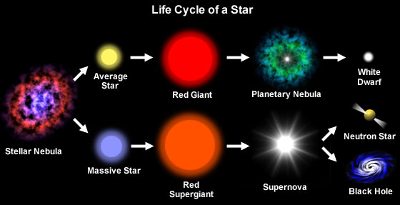

ดาวฤกษ์ทุกดวงมีการเกิด เปลี่ยนแปลง และสิ้นสุดลงเหมือนสิ่งต่าง ๆ ในธรรมชาติ ช่วงชีวิตของดาวฤกษ์เรียกว่า วงจรชีวิตดาวฤกษ์ ซึ่งระยะเวลาและจุดจบของดาวแต่ละดวงแตกต่างกันตามมวลตั้งต้น ดาวมวลมากจะใช้พลังงานเร็วและมีอายุสั้น ส่วนดาวมวลน้อยจะมีอายุยาวนานกว่า